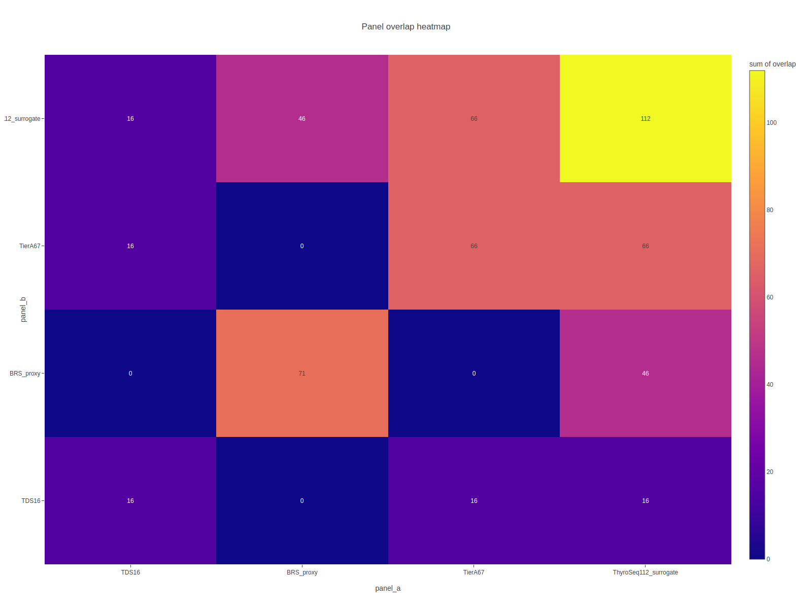
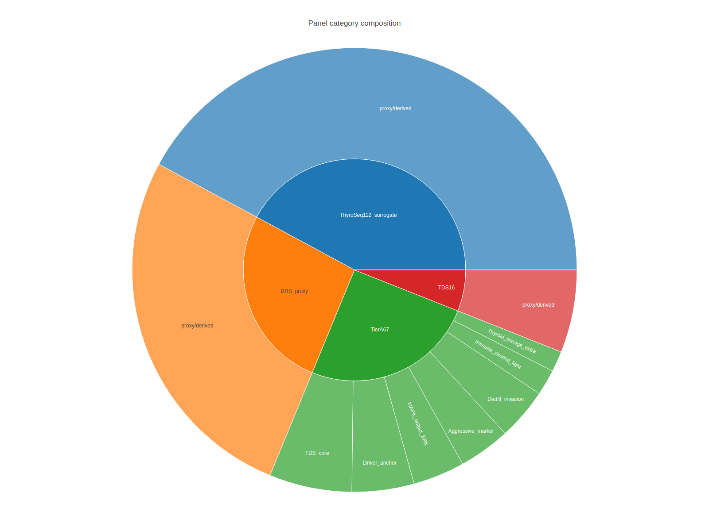
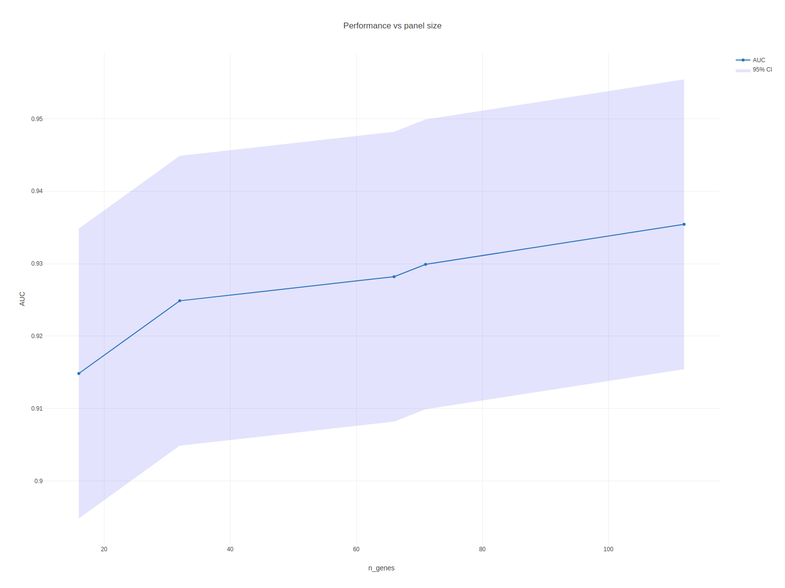
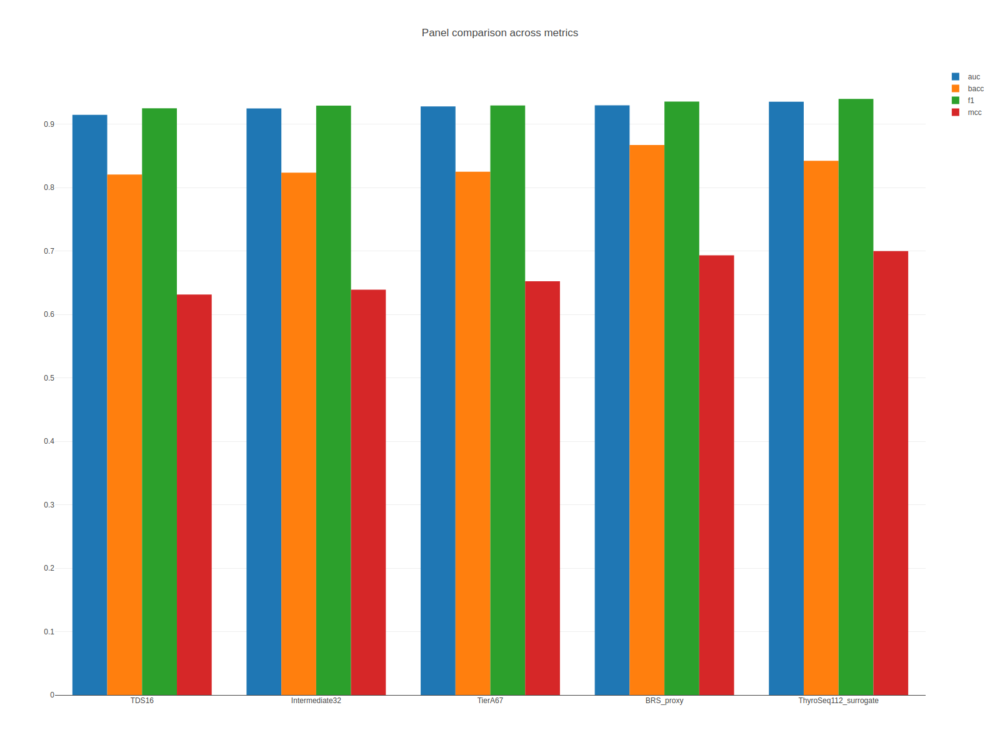

04 / GENE PANELS
유전자 패널 | THCA Multi-Omics Dashboard
TDS16, BRS proxy, TierA67, ThyroSeq-112 surrogate 구성을 비교합니다.
OverlapCoverageComposition
패널 비교
세 가지 연구 기반 유전자 패널
TDS16 / TierA67 / BRS71 / ThyroSeq112 패널 비교
각 패널의 정체
- TDS16 (Thyroid Differentiation Score, 16 genes): TCGA-THCA(Cell 2014) 논문에서 제안. 갑상선 세포가 얼마나 "정상처럼 분화되었는지"를 정량화합니다.
- BRS71 (BRAF-RAS Score, 71 genes): 같은 논문에서 BRAF vs RAS 축을 계산하는 proxy. 축 값이 양수면 BRAF-like, 음수면 RAS-like.
- TierA67: 후속 연구에서 greedy feature selection으로 뽑힌 67개 유전자. 외부 재현성이 좋은 upper tier.
- ThyroSeq-112 surrogate: 상용
ThyroSeq v3패널(112 gene)을 공개 데이터에서 재현한 surrogate. 실제 상용 패널과 완전히 동일하지 않으므로surrogate라고 부릅니다.
왜 이걸 비교하나
- 패널 크기가 클수록 성능은 조금씩 올라가지만 측정 비용과 복잡도도 커집니다. 의료현장에서 실효성은 ROC-AUC 외에도 비용 최적점에서 결정됩니다.
TDS16
16
Cell 2014 공식 gene set
BRS proxy
71
TCGA-THCA 내부 derivation
TierA67
67
요청 하드코딩 composite
ThyroSeq-112 surrogate
112
TierA67 + BRS proxy 확장
출처와 한계
- TDS16은 TCGA PTC Cell 2014 Table S5 기반 확정 리스트입니다.
- BRS71은 원본 supplementary를 확보하지 못해 proxy로 재정의했으므로 공식 BRS와 동일하다고 해석하면 안 됩니다.
- TierA67는 요청된 67 entries를 그대로 사용했지만, unique HGNC symbol 기준으로는 66개입니다.
- coverage는 각 expression matrix의 현재 gene identifier 상태를 그대로 반영하므로, annotation 문제는 그대로 드러납니다.
패널 overlap / coverage
유전자 겹침과 커버리지 해석
패널 overlap / coverage 의미
coverage란
- 해당 데이터셋의 플랫폼에서 패널 유전자가 측정 가능한 비율입니다.
- 예: 112 gene 패널 중 microarray 플랫폼에서 실제 probe가 있는 유전자가 108개라면 coverage는
108/112 = 96.4%.
왜 missing이 생기나
- 오래된 microarray는 일부 유전자의 probe가 설계되지 않았습니다.
- RNA-seq에서도 매우 짧거나 expression이 낮은 유전자는 드문드문 검출되지 않을 수 있습니다.
overlap (Venn/UpSet)
- 여러 패널이 공통으로 포함하는 "핵심" 유전자를 시각화합니다. 세 패널 모두에 등장하는 유전자일수록 "안정적인 분류 신호"로 해석됩니다.
coverage heatmap을 먼저 보고, 이후 overlap heatmap과 category composition으로 패널 간 정보 중복과 확장 범위를 읽으면 됩니다.
현재 coverage 핵심
- TCGA-THCA: TDS16 1.00, BRS proxy 1.00, TierA67 1.00
- GSE213647: TDS16 0.00, BRS proxy 0.00, TierA67 0.00
- GSE126698: TDS16 0.88, BRS proxy 0.77, TierA67 0.96
- GSE27155: TDS16 0.88, BRS proxy 0.56, TierA67 0.93
- GSE76039: TDS16 1.00, BRS proxy 0.79, TierA67 0.99

panel overlap heatmap
페이지 안에서는 PNG preview를 기본으로 먼저 보여주고, 아래 접힘 패널에서 Plotly 인터랙티브 버전을 바로 확대해서 볼 수 있습니다.

panel category sunburst
페이지 안에서는 PNG preview를 기본으로 먼저 보여주고, 아래 접힘 패널에서 Plotly 인터랙티브 버전을 바로 확대해서 볼 수 있습니다.
패널 성능 벤치마크 미리보기
성능 비교 요약
패널 성능 벤치마크 미리보기
빠르게 읽기
- 16 gene ≈ BRS axis를 근사한 최소 패널, 112 gene ≈ 상업용 테스트 규모.
- 두 극단 사이에서 AUC가 얼마나 늘고 얼마나 줄어드는지를 보여줍니다.
주의할 점
- 같은 AUC라도 외부 데이터셋에서 재현되는지는
07 ML,08 패널 비교에서 따로 확인해야 합니다.
패널 정의와 실제 모델 성능이 연결되는 지점을 같은 페이지에서 바로 보이게 하기 위해 성능 곡선을 같이 붙였습니다.

panel perf curve
페이지 안에서는 PNG preview를 기본으로 먼저 보여주고, 아래 접힘 패널에서 Plotly 인터랙티브 버전을 바로 확대해서 볼 수 있습니다.

panel grouped metrics
페이지 안에서는 PNG preview를 기본으로 먼저 보여주고, 아래 접힘 패널에서 Plotly 인터랙티브 버전을 바로 확대해서 볼 수 있습니다.